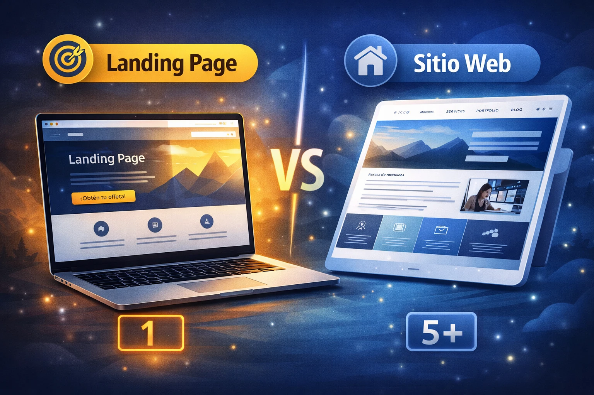

Landing Page vs Sitio Web: ¿cuál necesita tu negocio?

Si estás pensando en crear una página para tu negocio, seguramente te has preguntado: ¿necesito una landing page o un sitio web completo?
Elegir mal puede hacerte perder dinero, tiempo y clientes.
🚀 ¿Qué es una landing page?
Una landing page es una página diseñada con un solo objetivo: convertir visitantes en clientes.
- Enfocada en una sola oferta
- Sin distracciones
- Con llamados a la acción claros
🏢 ¿Qué es un sitio web?
Un sitio web es una estructura más completa con múltiples páginas:
- Inicio
- Servicios
- Portafolio
- Contacto
Está pensado para mostrar información, construir marca y posicionarse en Google.
⚖️ Diferencias clave
| Landing Page | Sitio Web |
|---|---|
| Una sola página | Varias páginas |
| Enfocada en vender | Enfocado en informar |
| Alta conversión | Mayor presencia digital |
🎯 ¿Cuál deberías elegir?
Elige landing page si:
- Quieres captar clientes rápido
- Tienes un servicio específico
- Vas a usar publicidad (Facebook Ads, Google Ads)
Elige sitio web si:
- Quieres construir marca
- Tienes varios servicios
- Quieres posicionarte en Google
🔥 La mejor estrategia (nivel profesional)
Los negocios más inteligentes usan ambos:
- Landing page → para vender
- Sitio web → para posicionar marca
👉 Esta combinación genera más resultados.
🚨 Error común
Muchas personas crean un sitio web esperando vender, pero sin estrategia de conversión.
👉 Resultado: visitas sin clientes.
🚀 Conclusión
No se trata de cuál es mejor, sino de cuál necesitas según tu objetivo.
Si quieres resultados reales, debes pensar en estrategia, no solo en diseño.
¿No sabes qué necesita tu negocio?
Te asesoramos gratis¿Quieres una página web que realmente convierta?
En AnnovaTech diseñamos sitios enfocados en resultados reales: más clientes, más contacto y mejor presencia digital.
Solicitar propuesta